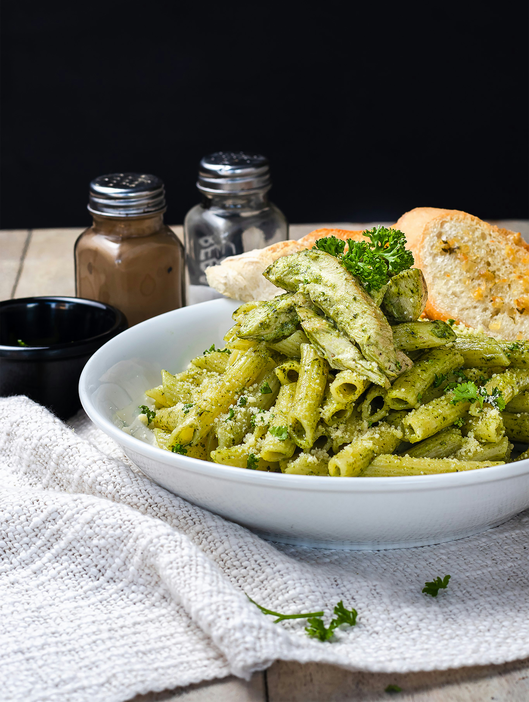

Spaghetti al pomodoro is a classic Italian dish and offers the most fresh and flavor-rich tomato sauce!
Order
Toasted bread is topped with a mixture of juicy tomatoes, garlic, Parmesan cheese, fresh basil, and balsamic vinegar.
OrderFresh, creamy, and spicy raviolis with mushrooms and freshly crushed tomatoes.
Order

In the heart of Almalfi, Italy, La Bella Luna got its start. As an Italian restaurant, we strive to serve you authentic, fresh Italian cuisines so you'll want to come back for more! Authenticity, sustainability, and excellence are our main priorities. We strive for fresh ingredients, obtaining from Naples, Italy. Savor your dinner with us at La Bella Luna!